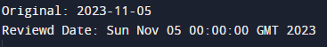
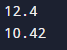
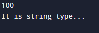
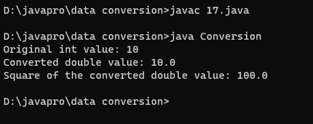
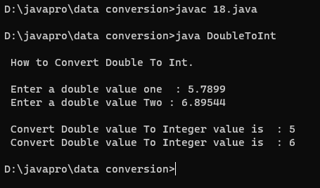
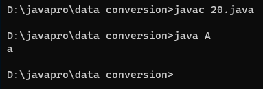
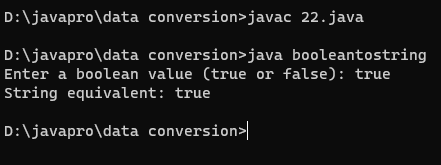
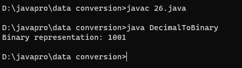
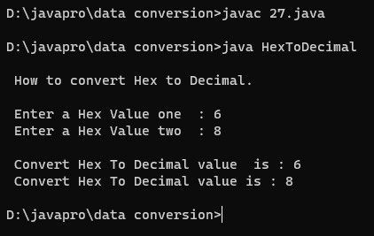
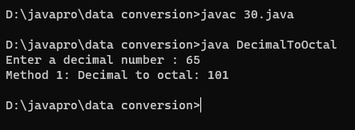

1. How to convert String to int
// How to convert String to int
public class StrToInt
{
public static void main(String[] args)
{
String str = "123";
int i=Integer.parseInt(str);
System.out.println("String is : "+str);
System.out.println("Str Convert to a int: "+ i);
System.out.println(1+i);
}
}
Output

3. How to convert String to long
public class StringToLongExample {
public static void main(String[] args) {
// Sample String
String numberString = "123456789";
try {
// Convert String to long
long number = Long.parseLong(numberString);
// Print the result
System.out.println("Converted long value: " + number);
} catch (NumberFormatException e) {
System.err.println("Error: Unable to parse the string as a long.");
e.printStackTrace();
}
}
}
Output

4. How to convert long to String
public class DataConversion4 {
public static void main(String[] args) {
long myLong = 123456L;
String str = Long.toString(myLong);
System.out.println(str);
}
}
Output

5. How to convert String to float
class StringToFloatExample {
public static void main(String[] args) {
// Example String containing a floating-point number
String floatString = "3.14";
// Convert String to float using Float.parseFloat()
try {
float floatValue = Float.parseFloat(floatString);
System.out.println("Converted float value: " + floatValue);
} catch (NumberFormatException e) {
System.out.println("Error: Invalid float format in the input string");
e.printStackTrace();
}
}
}
Output

6. How to convert float to String
//How to convert float to String
public class FloatToString
{
public static void main(String[] args)
{
float f = 10.4f;
System.out.println(f + 2);
String stringValue = "" + f;
System.out.println(stringValue + 2);
}
}
Output

7. How to convert String to double
package BCA5Practical;
//How to convert String to double
public class StringToDouble
{
public static void main(String[] args)
{
String str = "0.5";
double D=Double.parseDouble(str);
System.out.println("String is "+str);
System.out.println("String Converted to an Double "+ D);
System.out.println("Showing the String was converted to Double above "+(1+D));
}
}
Output

8. How to convert double to String
import java.util.Scanner;
class ja{
public static void main(String[] args){
Scanner sc = new Scanner(System.in);
System.out.print("Enter a double number: ");
double num = sc.nextDouble();
String str = Double.toString(num);
System.out.println("Converted String: " + str);
}
}
Output

9. How to convert String to Date
import java.text.SimpleDateFormat;
import java.util.Date;
public class convert {
public static void main(String[] args) {
Date date = new Date();
SimpleDateFormat formatter = new SimpleDateFormat("yyyy-MM-dd HH:mm:ss");
String strDate = formatter.format(date);
System.out.println("Date converted to string: " + strDate);
}
}
Output

10. How to convert Date to String
import java.util.Date;
import java.text.SimpleDateFormat;
class DateToString{
public static void main(String a[])
{
Date date=new Date();
System.out.println(date);
SimpleDateFormat s=new SimpleDateFormat("yyyy-MM-dd HH:mm:ss");
String str=s.format(date);
System.out.println(str);
}
}
Output

11. How to convert String to char
// Data conversion:- 11. How to convert string to Char. By(7058/21)
import java.util.*;
class STC{
public static void main(String args[]){
String str="Aryan";
char [] chr= new char[str.length()];
for(int i=0;i< str.length();i++){
chr[i]=str.charAt(i);
}
for (char c : chr){
System.out.println(c);
}
}
}
Output

12. How to convert char to String
// Data conversion:- 12. How to convert Char to String. By(7058/21)
import java.io.*;
import java.util.*;
class CTS{
public static void main(String args[]){
char d='A';
String str=Character.toString(d);
System.out.println("Char is converted to string:- "+str);
}
}
Output

13. How to convert String to Object
class prog13{
public static void main(String[] args) {
// Convert String to Integer
String intStr = "123";
int intValue = Integer.parseInt(intStr);
System.out.println("Converted Integer: " + intValue);
// Convert String to Double
String doubleStr = "3.14";
double doubleValue = Double.parseDouble(doubleStr);
System.out.println("Converted Double: " + doubleValue);
// Convert String to Boolean
String boolStr = "true";
boolean boolValue = Boolean.parseBoolean(boolStr);
System.out.println("Converted Boolean: " + boolValue);
// Convert String to Custom Object (using Constructor)
String customStr = "Hello, World!";
CustomObject customObject = new CustomObject(customStr);
System.out.println("Converted Custom Object: " + customObject.getData());
}
// Example Custom Object
static class CustomObject {
private String data;
public CustomObject(String data) {
this.data = data;
}
public String getData() {
return data;
}
}
}
Output

14. How to convert Object to String
//Program no. : data conversion 14
//Program name : How to convert Object to String
class dConversion{
public static void main(String[] args) {
Object obj = new Integer(100);
String s = String.valueOf(obj);
System.out.println(s);
if(s instanceof String){
System.out.println("It is string type...");
}
}
}
Output

17. How to convert int to double
class Conversion {
public static void main(String[] args) {
int x = 10;
double y = x;
System.out.println("Original int value: " + x);
System.out.println("Converted double value: " + y);
double square = y * y;
System.out.println("Square of the converted double value: " + square);
}
}
Output

18. How to convert double to int
import java.util.Scanner;
class DoubleToInt
{
public static void main(String args[])
{
System.out.println("\n How to Convert Double To Int.\n");
System.out.print(" Enter a double value one : ");
Scanner sc=new Scanner(System.in);
double num1 = sc.nextDouble();
System.out.print(" Enter a double value Two : ");
double num2 = sc.nextDouble();
int value1 =(int)num1;
int value2=(int)num2;
System.out.println("\n Convert Double value To Integer value is : "+value1);
System.out.println(" Convert Double value To Integer value is : "+value2);
}
} Output

19. How to convert char to int
//How to convert char to int
class chartoint
{
public static void main(String a[])
{
char myChar = 'A';
int myInt = myChar;
System.out.println("Character value: "+ myChar);
System.out.println();
System.out.println("Value after convert to Int: "+ myInt);
}
}
Output

20. How to convert int to char
// Using Concept of Type-casting
import java.util.*;
class A {
public static void main(String[] args)
{
int i = 97;
// Type casting character to integer
char ch = (char)i;
System.out.println(ch);
}
}
Output

21. How to convert String to boolean
import java.util.Scanner;
class convertStringToBoolean
{
public static void main(String args[])
{
System.out.println("\n How to convert String To Boolean.");
Scanner sc= new Scanner(System.in);
System.out.println(" ");
System.out.print(" Enter the String1 = ");
String str1 = sc.nextLine();
System.out.print(" Enter the String2 = ");
String str2 = sc.nextLine();
System.out.print(" Enter the String3 = ");
String str3 = sc.nextLine();
boolean b1 = Boolean.valueOf(str1);
boolean b2 = Boolean.valueOf(str2);
boolean b3 = Boolean.valueOf(str3);
System.out.println("");
System.out.println(" The convert String To Boolean Value is : "+b1);
System.out.println(" The convert String To Boolean Value is : "+b2);
System.out.println(" The convert String To Boolean Value is : "+b3);
}
}
Output

22. How to convert boolean to String
import java.util.Scanner;
class booleantostring {
public static void main(String[] a) {
Scanner s = new Scanner(System.in);
System.out.print("Enter a boolean value (true or false): ");
String booleanInput = s.nextLine();
boolean booleanValue = Boolean.parseBoolean(booleanInput);
String stringResult = booleanToString(booleanValue);
System.out.println("String equivalent: " + stringResult);
}
private static String booleanToString(boolean booleanValue) {
return String.valueOf(booleanValue);
}
}
Output

23. How to convert Date to Timestamp
import java.sql.Timestamp;
import java.util.Date;
class DateToTimestampExample {
public static void main(String[] args) {
// Create a Date object
Date date = new Date();
// Convert the Date to a Timestamp
Timestamp timestamp = new Timestamp(date.getTime());
System.out.println("Date: " + date);
System.out.println("Timestamp: " + timestamp);
}
}
Output

25. How to convert Binary to Decimal
import java.util.Scanner;
class binarytodecimal {
public static void main(String[] args) {
Scanner scanner = new Scanner(System.in);
System.out.print("Enter a binary number: ");
String binaryInput = scanner.nextLine();
if (!isValidBinary(binaryInput)) {
System.out.println("Invalid binary number. Please enter a valid binary number.");
return;
}
int decimalResult = binaryToDecimal(binaryInput);
System.out.println("Decimal equivalent: " + decimalResult);
}
private static boolean isValidBinary(String binaryInput) {
return binaryInput.matches("[01]+");
}
private static int binaryToDecimal(String binaryInput) {
int decimalResult = 0;
int binaryLength = binaryInput.length();
for (int i = binaryLength - 1; i >= 0; i--) {
int digit = binaryInput.charAt(i) - '0';
decimalResult += digit * Math.pow(2, binaryLength - 1 - i);
}
return decimalResult;
}
}
Output

26. How to convert Decimal to Binary
//How to convert Decimal to Binary
class DecimalToBinary {
public static void main(String[] args) {
int decimalNumber =9;
StringBuilder binary = new StringBuilder();
if (decimalNumber == 0) {
binary.append(0);
} else {
while (decimalNumber > 0) {
int remainder = decimalNumber % 2;
binary.insert(0, remainder);
decimalNumber = decimalNumber / 2;
}
}
System.out.println("Binary representation: "+ binary.toString());
}
}
Output

27. How to convert Hex to Decimal
import java.util.Scanner;
class `
{
public static void main(String args[])
{
System.out.println("\n How to convert Hex to Decimal.\n");
Scanner sc=new Scanner(System.in);
System.out.print(" Enter a Hex Value one : ");
String Hex1 = sc.nextLine();
System.out.print(" Enter a Hex Value two : ");
String Hex2 = sc.nextLine();
int dec1 = Integer.parseInt(Hex1, 16);
int dec2 = Integer.parseInt(Hex2, 16);
System.out.println("\n Convert Hex To Decimal value is : " + dec1);
System.out.println(" Convert Hex To Decimal value is : " + dec2);
}
}
Output

29. How to convert Octal to Decimal
class GFG {
public static void main(String args[])
{
String onum = "157";
int num = Integer.parseInt(onum, 8);
System.out.println(
"Decimal equivalent of Octal value 157 is: "
+ num);
}
}
Output

30. How to convert Decimal to Octal
import java.util.Scanner;
class DecimalToOctal
{
public static void main(String args[])
{
Scanner input = new Scanner( System.in );
System.out.print("Enter a decimal number : ");
int num =input.nextInt();
String octalString = Integer.toOctalString(num);
System.out.println("Method 1: Decimal to octal: " + octalString);
}
}
Output
